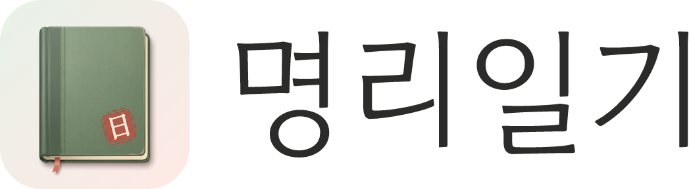
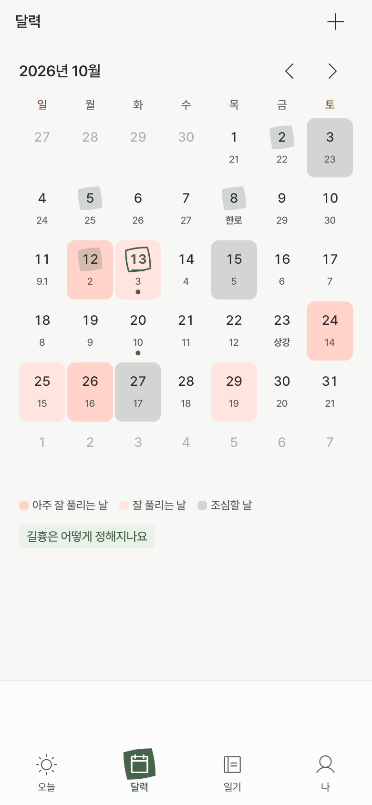

Play 그래픽 이미지 1024×500 (#1202, D133)
- Play 등록정보 맨 위와 추천 자리에 쓰이는 가로 그림입니다. 요청은 "글은 넣지 않거나 최소로"입니다.
- 바탕은 스크린샷과 같은
gradient.today이고, 로고는 정본 가로 조합 PNG(logo/lockup.png)를 그대로 씁니다. 미리보기는 실제 크기의 1/2입니다.
G1. 가로 조합 로고만추천
바탕 그라데이션 가운데에 아이콘과 워드마크 가로 조합 하나. 글이 없어 세 언어 같은 그림이고, 화면이 바뀌어도 다시 만들 일이 없습니다. Play가 그래픽 이미지를 작게 보이거나 가장자리를 잘라도 가운데 로고는 남습니다. 워드마크는 한글 하나뿐이라 en, ja 등록정보에도 한글 명리일기가 보입니다(앱 아이콘과 같은 정체성 표지로 둠. 언어별 앱 이름은 writing #1201이 정하고 스토어가 글로 보여 줌).

G2. 로고 + 화면 세 장
왼쪽에 로고, 오른쪽에 스크린샷 앞 세 장면(오늘, 근거 시트, 달력)을 F1 둥근 판으로 아래가 잘리게 둡니다. 앱 모습이 보이지만 1024×500에서 화면 글자는 읽히지 않고, 화면이 바뀌면 다시 만들어야 하며 화면 안 글 때문에 언어별 세 벌이 됩니다.



G3. 로고 + 한 줄 글
가운데 로고 아래 짧은 글 한 줄(writing이 씀, 아래는 자리 예시). 앱이 무엇인지 한 줄로 말하지만 요청의 "글은 넣지 않거나 최소로"에 걸치고 언어별 세 벌이 됩니다.
내 사주로 풀어 주는 오늘과 일기